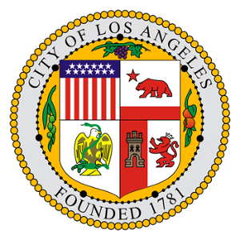

Introduction & Motivation
Los Angeles has ranked high on the lists of cities with the worst traffic for decades. The average rush hour delay per 30-minute journey is 25 minutes. That adds up to an additional 95 hours behind the wheel each year due to traffic jams, according to TomTom Traffic Index. Nonetheless, traffic collisions happen more often in rush hours.
Based on such situation, the City of Los Angeles and the University of Southern California undertake a partnership in the use of advanced data analysis techniques to assess traffic collision, traffic engineering data and other analytics factors with the intent of identifying and reducing pedestrian and bicycle vs. auto collisions. Partnerships include USC Marshall School of Business, Information Technology Agency, Department of Transportation and LAPD. Project duration lasts from February to April 2015. The data used for the report is provided by LADOT, and the timeline of the data is from April 2008 to March 2013.